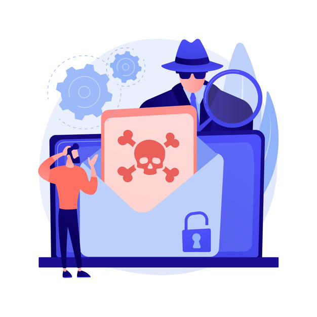
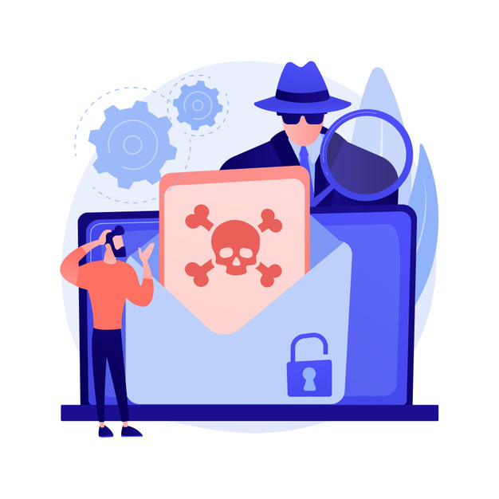

Pateros Cybersecurity Awareness Initiative
Welcome to the SecuPateros, where we strive to educate and empower individuals and organizations to stay safe online. With the increasing number of cyber attacks and data breaches, it's more important than ever to stay informed about the latest cybersecurity threats and best practices.
Our initiative offers a variety of resources, including workshops, webinars, and online courses, to help you learn how to protect yourself and your organization from cyber threats.Whether you're a small business owner, a government employee, or an individual looking to improve your online security, we have the resources and expertise to help you stay safe in the digital world.
"Join us today and take the first step towards a safer and more secure online experience."
Learn More!
 
